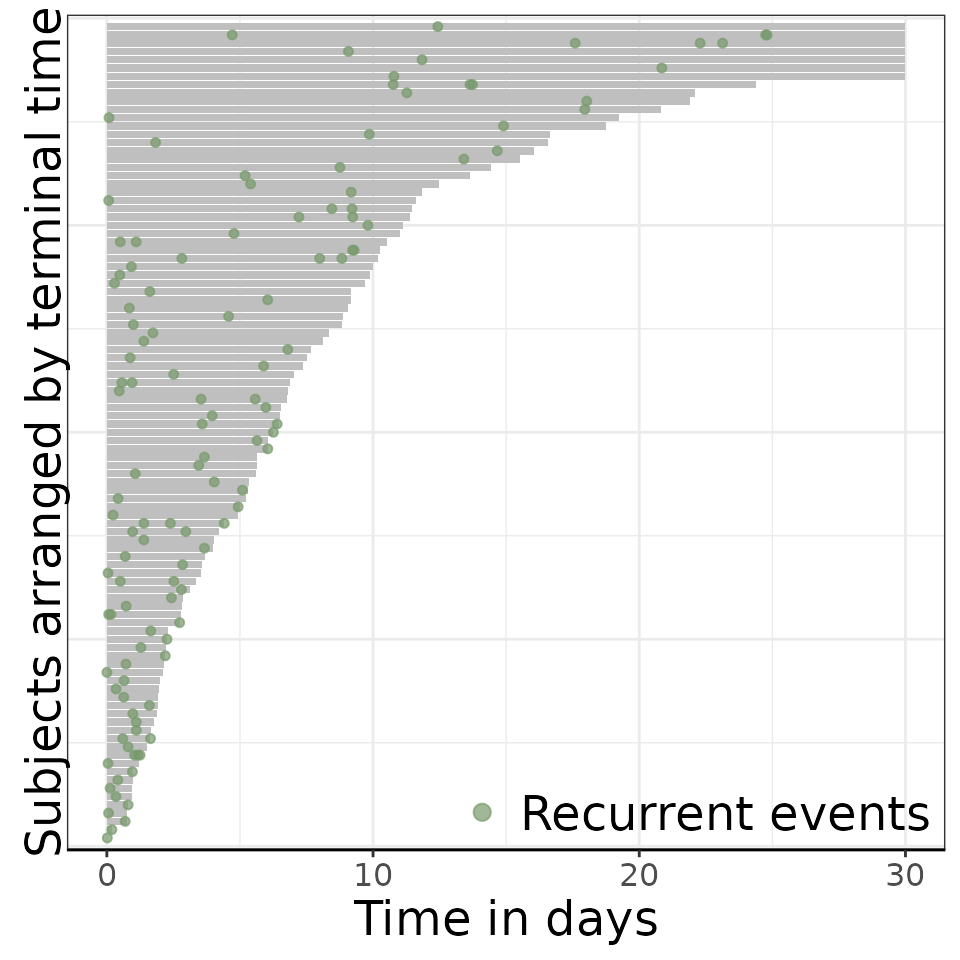
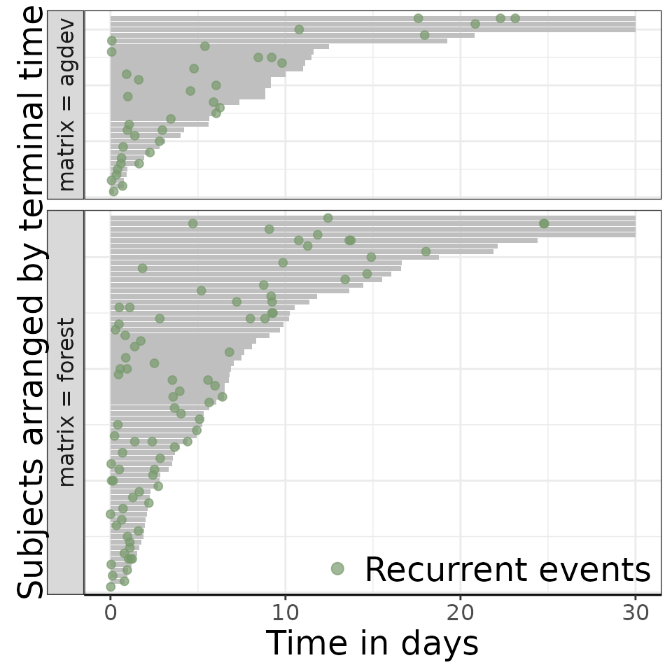
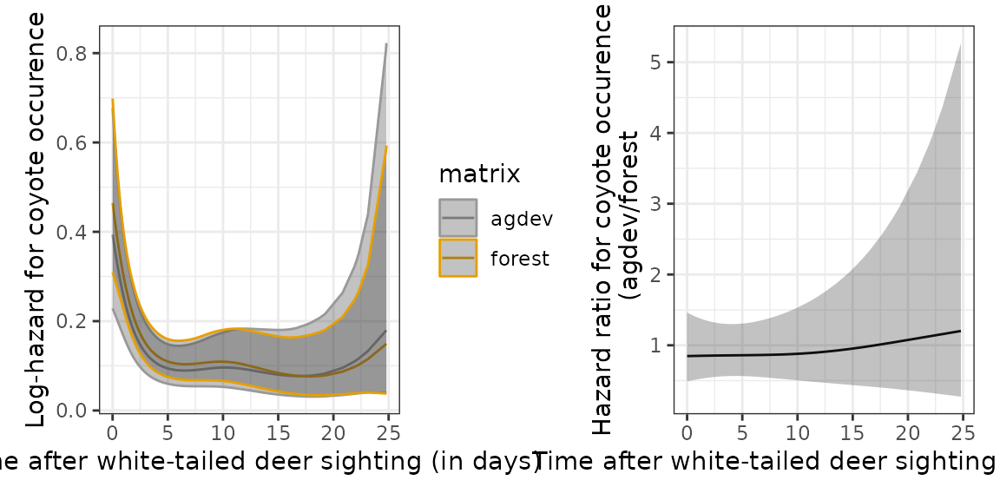

vignettes/example-analysis.Rmd
example-analysis.RmdThe goal of ctrecurrent is to transform
the camera trap data into a format suitable for recurrent event
analysis. It contains the function ct_torecurrent to do so,
requiring a data frame with the following information for each
observation1:
In the first step we look at the ?murphy data available
with the package:
##
## Attaching package: 'dplyr'## The following objects are masked from 'package:stats':
##
## filter, lag## The following objects are masked from 'package:base':
##
## intersect, setdiff, setequal, union##
## Attaching package: 'pammtools'## The following object is masked from 'package:stats':
##
## filter
library(ggplot2)
theme_set(theme_bw())
library(patchwork)
library(reReg)
library(ctrecurrent)
head(murphy)## # A tibble: 6 × 4
## Site Species DateTime matrix
## <chr> <chr> <dttm> <chr>
## 1 2016BE02 Bear 2016-07-27 05:52:00 agdev
## 2 2016BE02 Fawn 2016-07-29 17:25:00 agdev
## 3 2016BE02 Bear 2016-08-15 10:26:00 agdev
## 4 2016BE02 Fawn 2016-08-15 15:59:00 agdev
## 5 2016BE02 Coyote 2016-08-16 21:41:00 agdev
## 6 2016BE02 Coyote 2016-08-19 06:53:00 agdev
unique(murphy$Species)## [1] "Bear" "Fawn" "Coyote" "Bobcat" "Human" "Deer"
## [7] "Motorized"
range(murphy$DateTime)## [1] "2016-05-23 20:41:00 UTC" "2017-09-12 09:03:00 UTC"
table(murphy$matrix)##
## agdev forest
## 1799 2337As we can see above, the camera captured different types of objects.
In the analysis below, we will focus on “Deer” as the primary species
and “Coyote” as secondary. Everything else will be considered tertiary
species. Thse matrix covariate contains information about
the environment in which the camera is placed, either agriculturally
developed or forest.
In the next step, we have to define which species we want to consider as the primary and secondary. This is important, as this dictates the direction of the effect. Below we define “Deer” as the primary species and “Coyote” as secondary, thus the model will estimate how the presence of Deer affects the time until the occurence of a Coyote. Occurence of a tertiary species will be considered a censoring event. Finally, we have to set the end date of the study. The last two arguments do not necessarily need to be specified, the default is to take all species outside of primary and secondary as tertiary and the maximum date in the data as survey end date.
The data transformation for analysis consists of 2 steps
ct_to_recurrent). Here, at each site, we look for the first
occurence of the primary species, which indicates the start of the first
survey at this site. Covariate information is added as needed. Occurence
of the secondary species will be considered a (recurrent) event within
each survey, and the survey at that site continues until
survey_duration ->
administrative censoring)as_ped from
pammtools package). This transforms the
time-to-event data from the recurrence data from step 1. by splitting
the time-axis in intervals which facilitates estimation of the hazard
for an occurence of the secondary species (see here
and here)
# Step 1) transform to recurrent event format
# note that datetime_var, species_var and site_var have defaults, but they need to
# be adjusted if your column names are different
recu = ct_to_recurrent(
data = murphy,
primary = primary,
secondary = secondary,
tertiary = tertiary,
datetime_var = "DateTime",
species_var = "Species",
site_var = "Site",
survey_end_date = end_date,
survey_duration = 30)## Joining with `by = join_by(survey_id)`
recu |> select(Site, survey_id, t.start, t.stop, event, status, enum)## # A tibble: 221 × 7
## # Groups: survey_id [99]
## Site survey_id t.start t.stop event status enum
## <chr> <chr> <dbl> <dbl> <dbl> <dbl> <int>
## 1 2016BE15 2016BE15-3 0 10.8 1 0 1
## 2 2016BE15 2016BE15-3 10.8 30 0 0 2
## 3 2016BE22 2016BE22-6 0 0.344 1 0 1
## 4 2016BE22 2016BE22-6 0.344 0.939 0 0 2
## 5 2016BE22 2016BE22-9 0 5.89 1 0 1
## 6 2016BE22 2016BE22-9 5.89 7.37 0 0 2
## 7 2016BE98 2016BE98-3 0 18.0 1 0 1
## 8 2016BE98 2016BE98-3 18.0 20.8 0 0 2
## 9 2016ROTH23 2016ROTH23-1 0 20.8 1 0 1
## 10 2016ROTH23 2016ROTH23-1 20.8 30 0 0 2
## # ℹ 211 more rows
# Merge covariate information with recurrent events data table
cov = murphy %>%
select(Site, matrix) %>%
distinct()
data = left_join(recu, cov)## Joining with `by = join_by(Site)`
data |> select(Site, survey_id, primary, secondary, t.start, t.stop, event, matrix)## # A tibble: 221 × 8
## # Groups: survey_id [99]
## Site survey_id primary secondary t.start t.stop event matrix
## <chr> <chr> <chr> <chr> <dbl> <dbl> <dbl> <chr>
## 1 2016BE15 2016BE15-3 Deer Coyote 0 10.8 1 agdev
## 2 2016BE15 2016BE15-3 Deer Coyote 10.8 30 0 agdev
## 3 2016BE22 2016BE22-6 Deer Coyote 0 0.344 1 agdev
## 4 2016BE22 2016BE22-6 Deer Coyote 0.344 0.939 0 agdev
## 5 2016BE22 2016BE22-9 Deer Coyote 0 5.89 1 agdev
## 6 2016BE22 2016BE22-9 Deer Coyote 5.89 7.37 0 agdev
## 7 2016BE98 2016BE98-3 Deer Coyote 0 18.0 1 agdev
## 8 2016BE98 2016BE98-3 Deer Coyote 18.0 20.8 0 agdev
## 9 2016ROTH23 2016ROTH23-1 Deer Coyote 0 20.8 1 agdev
## 10 2016ROTH23 2016ROTH23-1 Deer Coyote 20.8 30 0 agdev
## # ℹ 211 more rows
# Events plot
reReg::plotEvents(
Recur(t.start %to% t.stop, survey_id, event, status) ~ 1,
data = data,
xlab = "Time in days",
ylab = "Subjects arranged by terminal time")
# By levels of matrix landscape
reReg::plotEvents(
Recur(t.start %to% t.stop, survey_id, event, status) ~ matrix,
data = data,
xlab = "Time in days",
ylab = "Subjects arranged by terminal time")
# PED transformation
ped = data %>%
as_ped(
formula = Surv(t.start, t.stop, event)~ matrix + Site,
id = "survey_id",
transition = "enum",
timescale = "calendar") |>
mutate(Site = as.factor(Site)) |>
mutate(survey_id = as.factor(survey_id))
# check the data for one survey
ped |>
filter(survey_id == "2016BE15-3") |>
group_by(enum) |>
slice(1, n()) |>
select(survey_id, tstart, tend, enum, ped_status)## # A tibble: 4 × 5
## # Groups: enum [2]
## survey_id tstart tend enum ped_status
## * <fct> <dbl> <dbl> <int> <dbl>
## 1 2016BE15-3 0 0.00347 1 0
## 2 2016BE15-3 10.8 10.8 1 1
## 3 2016BE15-3 10.8 11.0 2 0
## 4 2016BE15-3 24.8 24.8 2 0In the final step, we fit a model to the PED data, which differs depending on the assumptions about the process. Here we fit 4 models
m_null: baseline model for hazard of Coyote occurence
(without covariates)m_ph: proportional hazards model for the effect of
landscapem_tv: stratified hazards model (each landscape category
has its own baseline hazard)m_re: As m_tv but with random effect for
camera trap site
# Baseline model
m_null = pamm(
formula = ped_status ~ s(tend),
data = ped)## Warning: glm.fit: fitted rates numerically 0 occurred
## Warning: glm.fit: fitted rates numerically 0 occurred
summary(m_null)##
## Family: poisson
## Link function: log
##
## Formula:
## ped_status ~ s(tend)
##
## Parametric coefficients:
## Estimate Std. Error z value Pr(>|z|)
## (Intercept) -1.63064 0.09475 -17.21 <2e-16 ***
## ---
## Signif. codes: 0 '***' 0.001 '**' 0.01 '*' 0.05 '.' 0.1 ' ' 1
##
## Approximate significance of smooth terms:
## edf Ref.df Chi.sq p-value
## s(tend) 4.196 5.167 40.32 1.48e-06 ***
## ---
## Signif. codes: 0 '***' 0.001 '**' 0.01 '*' 0.05 '.' 0.1 ' ' 1
##
## R-sq.(adj) = -0.00655 Deviance explained = 2.95%
## UBRE = -0.89609 Scale est. = 1 n = 12521
# Proporitional hazards effect of landscape (matrix)
m_ph = pamm(
formula = ped_status ~ matrix + s(tend),
data = ped)## Warning: glm.fit: fitted rates numerically 0 occurred
## Warning: glm.fit: fitted rates numerically 0 occurred
summary(m_ph)##
## Family: poisson
## Link function: log
##
## Formula:
## ped_status ~ matrix + s(tend)
##
## Parametric coefficients:
## Estimate Std. Error z value Pr(>|z|)
## (Intercept) -1.7212 0.1675 -10.277 <2e-16 ***
## matrixforest 0.1319 0.1971 0.669 0.503
## ---
## Signif. codes: 0 '***' 0.001 '**' 0.01 '*' 0.05 '.' 0.1 ' ' 1
##
## Approximate significance of smooth terms:
## edf Ref.df Chi.sq p-value
## s(tend) 4.2 5.172 40.02 1.68e-06 ***
## ---
## Signif. codes: 0 '***' 0.001 '**' 0.01 '*' 0.05 '.' 0.1 ' ' 1
##
## R-sq.(adj) = -0.0066 Deviance explained = 2.98%
## UBRE = -0.89596 Scale est. = 1 n = 12521
# Time-varying covariate effect
m_tv = pamm(
formula = ped_status ~ matrix + s(tend) +
s(tend, by = as.ordered(matrix)),
data = ped,
engine = "bam", method = "fREML", discrete = TRUE)## Warning in bgam.fitd(G, mf, gp, scale, nobs.extra = 0, rho = rho, coef = coef,
## : fitted rates numerically 0 occurred
summary(m_tv)##
## Family: poisson
## Link function: log
##
## Formula:
## ped_status ~ matrix + s(tend) + s(tend, by = as.ordered(matrix))
##
## Parametric coefficients:
## Estimate Std. Error z value Pr(>|z|)
## (Intercept) -1.9457 0.1659 -11.727 <2e-16 ***
## matrixforest 0.1303 0.1989 0.655 0.512
## ---
## Signif. codes: 0 '***' 0.001 '**' 0.01 '*' 0.05 '.' 0.1 ' ' 1
##
## Approximate significance of smooth terms:
## edf Ref.df Chi.sq p-value
## s(tend) 3.976 4.905 22.616 0.000379 ***
## s(tend):as.ordered(matrix)forest 1.187 1.338 0.227 0.866032
## ---
## Signif. codes: 0 '***' 0.001 '**' 0.01 '*' 0.05 '.' 0.1 ' ' 1
##
## R-sq.(adj) = -0.00675 Deviance explained = -14.2%
## fREML = 12161 Scale est. = 1 n = 12521
m_re <- pamm(
formula = ped_status ~ matrix + s(tend) + s(tend, by = as.ordered(matrix)) +
s(Site, bs = "re"),
data = ped, engine = "bam", method = "fREML", discrete = TRUE
)## Warning in bgam.fitd(G, mf, gp, scale, nobs.extra = 0, rho = rho, coef = coef,
## : fitted rates numerically 0 occurred
summary(m_re)##
## Family: poisson
## Link function: log
##
## Formula:
## ped_status ~ matrix + s(tend) + s(tend, by = as.ordered(matrix)) +
## s(Site, bs = "re")
##
## Parametric coefficients:
## Estimate Std. Error z value Pr(>|z|)
## (Intercept) -1.9457 0.1659 -11.727 <2e-16 ***
## matrixforest 0.1303 0.1989 0.655 0.512
## ---
## Signif. codes: 0 '***' 0.001 '**' 0.01 '*' 0.05 '.' 0.1 ' ' 1
##
## Approximate significance of smooth terms:
## edf Ref.df Chi.sq p-value
## s(tend) 3.9763201 4.905 22.611 0.00038 ***
## s(tend):as.ordered(matrix)forest 1.1867311 1.338 0.226 0.86635
## s(Site) 0.0001174 69.000 0.000 0.99878
## ---
## Signif. codes: 0 '***' 0.001 '**' 0.01 '*' 0.05 '.' 0.1 ' ' 1
##
## R-sq.(adj) = -0.00675 Deviance explained = -14.2%
## fREML = 12161 Scale est. = 1 n = 12521While the models have their own default plot methods, the most flexible way to visualize non-linear effects is to
make_newdata)add_* functions), including
CIsggplot2)The pammtools package provides helper
functions for the first two steps.
In the first plot, we can see the attraction effect of deer on coyotes lasts for about 5 days. Afterwards the hazard for the occurence of coyotes is constant (the wigglines can be ignored since the uncertainty is quiet high).
# Null model
ndf_null <- ped %>%
make_newdata(tend = unique(tend)) %>%
add_hazard(m_null)
p_null = ggplot(ndf_null, aes(x = tend, y = hazard)) +
geom_line() +
geom_ribbon(aes(ymin = ci_lower, ymax = ci_upper), alpha = .3) +
xlab("Time after white-tailed deer sighting (in days)") +
ylab("Log-hazard for coyote occurence")
print(p_null)In the second plot, we plot the hazards for coyote occurence for each
category of landscape (matrix) in one plot (left panel) and
their hazard ratio(right panel). This indicates (hazard ratio = 1), that
given a sighting of a deer (primary), occurence of coyotes is not
affected by the type of landscape in which the deer was sighted.
# Stratified hazards
ndf_tv <- ped %>%
make_newdata(tend = unique(tend), matrix = unique(matrix)) %>%
add_hazard(m_tv)
p_tv = ggplot(ndf_tv, aes(x = tend, y = hazard, colour = matrix)) +
geom_line() +
geom_ribbon(aes(ymin = ci_lower, ymax = ci_upper), alpha = .3) +
scale_color_manual(values = c("#999999", "#E69F00")) +
xlab("Time after white-tailed deer sighting (in days)") +
ylab("Log-hazard for coyote occurence")
ndf_hr <- ped %>%
make_newdata(tend = unique(tend), matrix = c("agdev")) %>%
add_hazard(m_tv, reference = list(matrix = "forest"))
p_hr = ggplot(ndf_hr, aes(x = tend, y = hazard)) +
geom_line() +
geom_ribbon(aes(ymin = ci_lower, ymax = ci_upper), alpha = .3) +
xlab("Time after white-tailed deer sighting (in days)") +
ylab("Hazard ratio for coyote occurence\n (agdev/forest")
p_tv + p_hr
If your data is a different format, you can try to bring it into the required format before using the functions provided here, or post an issue on GitHub if you use a common camera trap format, so we can extend the provided functionality.↩︎